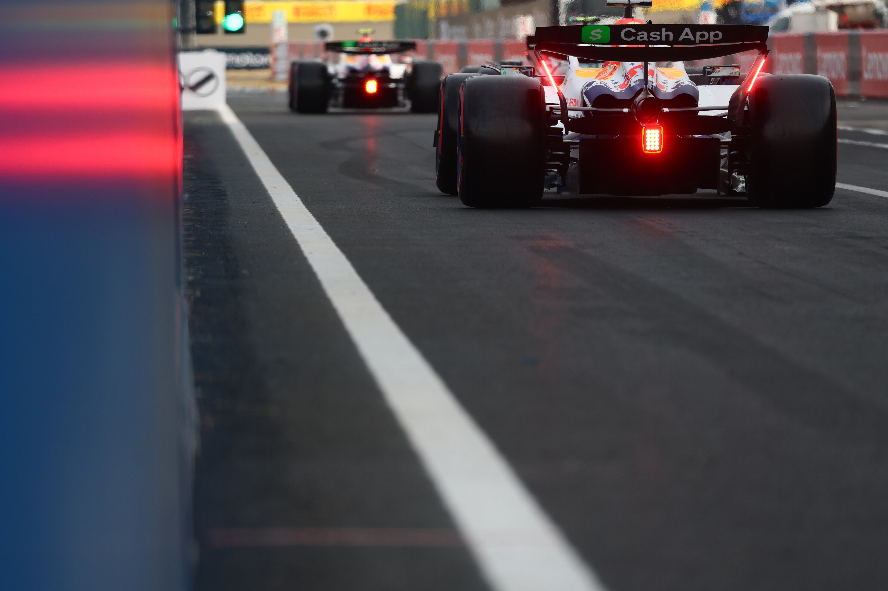
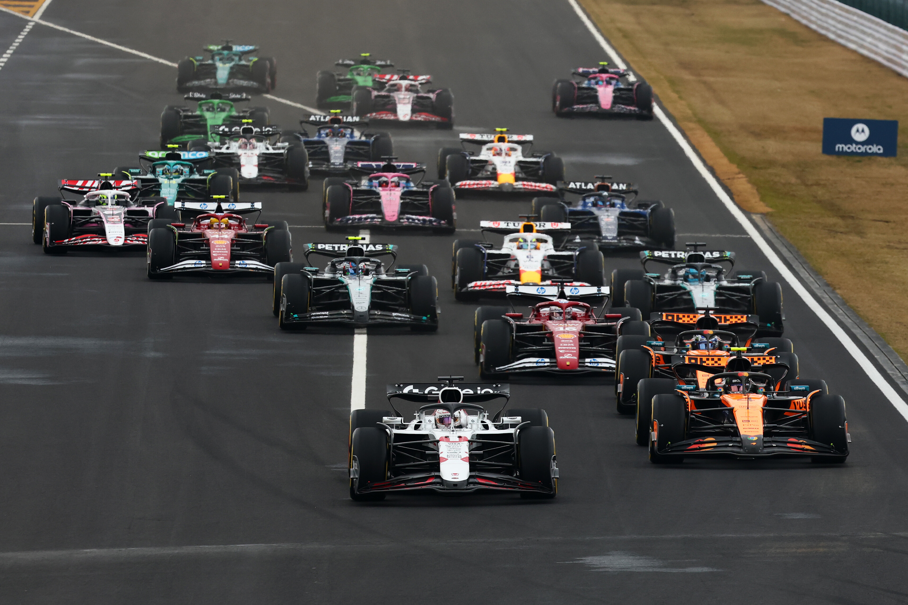

F1比賽周末是什麼？
你知道嗎？F1每次的比賽並不是只有一場比賽喔！事實上，一個F1比賽周末通常是個三天的活動，每天都有不一樣的活動跟時程表。
每個F1比賽周末會在星期五~星期日舉行，其中包含：
- 練習賽
- 排位賽
- 正賽
而在2023年的時候，F1引入了新的比賽周末模式，就是衝刺周末 Sprint Weekend！但也不是每一場都是衝刺周末，像是在2025年的F1賽季中，就一共只有6個衝刺周末！
而在衝刺周末時，三天的活動又不太一樣:
- 練習賽
- 衝刺排位賽
- 衝刺賽
- 排位賽
- 正賽
接下來就讓我來為大家詳細介紹這些活動吧！
接下來的文章有點長，看完需要點耐心！沒辦法我真的很想分享...

星期五：練習賽 Free Practice
在一個F1比賽周末的第一天，整天的賽程都會是練習賽!
就像是你在學習一項新運動時，要想要學會、精通這項運動，你一定要先練習對吧？F1比賽也是一樣的道理！
在每個正常比賽周末的星期五，F1車隊、車手會有三個小時的時間可以進行練習賽，分為三段一個小時的自由練習時間，分別是：
自由練習三比較不一樣，會在星期六進行，在排位賽之前！
在練習賽當中，每個車隊會進行各種不同的測試，來把賽車調校到最好的狀態，讓賽車能在接下來的周末中拿出最好的表現。
1. 車輛調校

因為F1每個周末的賽道都不一樣，有些賽道有非常多條直線，有些則有許多彎道，也代表每個賽道所需要的賽車特性也不一樣。在彎道多的賽道時，賽車會需要有較好的下壓力，讓賽車能在過彎時有更好的抓地力、操作更靈敏！反之，在直線較多的賽道時，賽車則需要有較低的下壓力，讓賽車能在直線上有更高的速度！調整這些也正是車隊和車手在練習賽中的主要工作!
下壓力能做什麼？
下壓力越大，代表賽車所施加給賽道路面的正向力越大，賽車輪胎所能產生的最大靜摩擦力也越大。高中物理！
2. 輪胎測試

除此之外，車隊也會在練習賽中測試賽車的輪胎！在F1中，一共有五種輪胎選擇：
- 硬胎(白色環)：耐磨度、壽命最長，但也是最慢的。
- 中性胎(黃色環)：耐磨度、壽命、速度等都介於硬胎跟軟胎間。
- 軟胎(紅色環)：耐磨度最低、壽命最短，但速度最快
- 半雨胎(綠色)：在賽道有少量積水時使用，有胎紋，在乾燥賽道上容易過熱。
- 極限雨胎(藍色)：在賽道有大量積水時使用，有胎紋，在乾燥賽道上容易過熱。
乾胎/光頭胎 Slick Tyres
雨胎 Wet Tyres
雖然每個周末的比賽的輪胎種類都是相同的，但就像先前說的，每個賽道的特性都不一樣，這些輪胎的性能也會隨著賽道的不同而有所改變！
在練習賽中，車隊會測試不同的輪胎組合，觀察在不同調校、油量下，不同輪胎種類的磨損速度、性能等，來找出最適合這個賽道的輪胎組合。
輪胎的配額
在F1中，每位車手在一個比賽中總共會配給20套輪胎，其中包含13套乾胎(軟、中性、硬胎)、4套半雨胎、3套極限雨胎！
除此之外，每位進入第三段排位賽(Q3)的車手，會額外獲得一套軟胎！
3. 車手練習

在比賽中，除了車子的調校很重要之外，車手對賽道的熟悉程度也非常重要！雖然說目前在F1中的車手，除了少數幾位是新手之外，其他的車手幾乎都是有過去幾年在F1中比賽的經驗，絕對不會是第一次在這些賽道上比賽，但是每年的賽車性能、特性都有所不同，賽道也可能因為重新鋪設柏油等原因而使得賽道的特性有所改變！
正因如此，每個周末一開始的練習賽對這些車手來說就非常重要！他們需要在這三個小時中，熟悉賽道的每一個彎道、每一個路面特性，甚至是每一個路面上的小坑洞，盡力釋放賽車的所有潛力！
星期六：排位賽 Qualifying
結束了所有練習賽之後，星期六賽程的一大重點就是排位賽了！經過星期五的練習賽，車隊和車手都已經對賽道有了相當的了解，這時候就要來決定比賽的起跑位置了！
排位賽的賽程分為三個階段，分別是：
- 排位賽一(Q1)：18分鐘
- 排位賽二(Q2)：15分鐘
- 排位賽三(Q3)：12分鐘
在排位賽中，車手的名次是透過他們在該階段中的最快單圈決定！而在第一、二段排位賽中，排名最後五位的車手會被淘汰，剩下的晉級進入下一階段！而在第三段排位賽中，剩下的10位車手會在這段時間內爭取獲得杆位(Pole Position)，也就是第一個起跑位置！

最快單圈是啥？
最快單圈指的是一位車手完整跑完整圈賽道的時間，但是如果車手在這圈中犯規，如：超出賽道邊界等，這圈的時間就會被取消，不列入計算。
起跑排名有多重要？
在F1中，所有車手都會在同一段直線上起跑，而排名越前面的車手，起跑位置就可以越前面！通常在起跑的時候會是場上所有車輛最靠近、最擠的時候，而這時如果車手能夠爭取到前面的位置，就能在起跑的時候，避免被其他車手擋住，或是發生碰撞等情況，更容易保住位置！
排位賽的跑法
在排位賽中，每位車手每一次的計時嘗試都會至少需要三圈！
第一圈是暖胎預備圈(Out Lap)，這時候車手會將車子從維修站開到賽道上，繞一圈回到起點直線準備開始計時。在過程中，車手會利用這一圈的時間來讓輪胎、煞車等進入工作溫度內，讓賽車能在接下來的計時圈中有最好的表現！
第二圈是計時圈(Flying Lap)，也是車手在這一段時間中最重要的一圈！這一圈的時間會被計算進入排位賽的成績中，車手會全力以赴的將賽車開到最快的速度！
第三圈是冷卻圈(Cool Down Lap / In Lap)，這一圈車手會將賽車開回維修站，並且在過中讓賽車的輪胎、煞車等能夠降溫，避免過熱！
但這並不代表每位車手每次都會這樣跑！有些時候，車手可能會選擇跑兩圈的預備圈，然後才開始計時；有些時候，車手則可能會選擇在一段計時圈結束之後，跑完冷卻圈之後再開始跑第二段計時圈，而不是選擇開回維修站！
這些都是車手和車隊工程師之間需要合作討論決定的，很多時候也是能不能獲得第一名，或是不被淘汰的關鍵！
星期日：正賽 Race
在星期日中，只會進行一場比賽，也就是所有人最期待、也是一個比賽周末中最重要的正賽！
最終正賽的比賽結果，會決定每位車手所能夠得到的積分，積分分布如下：
- 第一名：25 分
- 第二名：18 分
- 第三名：15 分
- 第四名：12 分
- 第五名：10 分
- 第六名：8 分
- 第七名：6 分
- 第八名：4 分
- 第九名：2 分
- 第十名：1 分
這些積分在賽季結束之後，會結算來決定車手和車隊的總冠軍！車隊的排名更決定了他們所能獲得的獎金多寡，間接決定了他們來年能用在開發工作等的預算，可說是非常的重要！
那車手呢？
雖然車手並不會因為車手名次獲得獎金，但他們的合約當中多半會有一個獎金條款，會依照他們在賽季中的排名來決定他們能獲得的額外獎金！
正賽要跑多久？
正賽會是一場長度為最少305公里的比賽，除以賽道單圈長度來決定比賽圈數(無條件進位)，或是時間為兩小時的比賽(若因突發狀況、事故等而有暫停比賽，則總時間不得超過3小時)，兩者以先到者為準！
不同賽道的正賽圈數一樣嗎？
不一樣！舉例來說：日本站一圈的長度為5.8公里左右，所以正賽的圈數會是53圈；比利時站的單圈長度則是7公里左右，所以正賽的圈數會是44圈！
正賽策略
在正賽中，如果當天沒有下雨、用到雨胎的話，每輛賽車都被要求必須要使用兩種不同的輪胎種類，但不限制在什麼時候換胎！
這也造成要用什麼輪胎起跑、什麼時候要換、換成什麼輪胎等問題，都是可能決定比賽結果的因素！通常在比賽開始前，車隊策略組和手會先開會決定起跑的幾種可能策略，但實際要選用什麼策略，還是必須要看當下賽道狀況、其他車隊、車手的策略等等來決定！
誰決定策略？
在F1中，車隊中有策略組會負責決定比賽中的策略！他們會根據賽道狀況、天氣、車手的駕駛風格等來決定最適合的策略！
所有車隊也多有與各大雲端運算公司合作，利用雲端運算來及時推算出最適合的策略！
進站

在正賽中，車手可以隨時進入維修站進行換胎、檢查等工作！而在進站的時候，車手必須要將賽車停在維修站的指定位置上，然後等待維修人員進行換胎等工作！
在F1這個分秒必爭的運動中，停站時間多一兩秒鐘，可能就會讓車手失去幾個名次！所以在進站的時候，車隊會盡量將停站的時間壓到最短，也代表車隊維修人員絕對不可以失誤！
進站的時間有多快？
在F1中，進站的時間通常會在2~4秒之間！這段時間包含車子開入定位停下、換胎、再加速開走的時間！
而在2023年賽季中，紅牛車隊的進站紀錄為1.8秒！
結束後的頒獎典禮
在正賽結束後，會有一個頒獎典禮，會頒發給前三名的車手獎盃，以及得到最高積分的車隊！
在頒獎典禮中，除了常見的放國歌、頒獎盃之外，還會有一個特別的傳統，那就是在頒完獎之後，車手們會互噴香檳慶祝！這個傳統已經持續了幾十年，從來沒有改變過！每次都把頒獎台弄得超級濕又超亂呵呵

特別的比賽：衝刺賽 Sprint Race
衝刺排位賽 Sprint Qualifying
在衝刺周末中，星期六的賽程會有一個特別的衝刺排位賽！這場排位賽同樣會分成三個階段，但有些許的不同：
- 衝刺排位賽一(Sprint Qualifying 1)：12分鐘，只能使用中性胎(黃胎)
- 衝刺排位賽二(Sprint Qualifying 2)：10分鐘，只能使用中性胎(黃胎)
- 衝刺排位賽三(Sprint Qualifying 3)：8分鐘，可使用軟胎(紅胎)
這場排位賽的名次會決定衝刺賽的起跑名次，而這場排位賽的結果不會影響到正賽的起跑名次！
衝刺賽 Sprint Race
衝刺排位賽結束後，就是衝刺賽了！
這場比賽和正賽大同小異，但比賽長度會縮短為100公里，或是大約30分鐘的比賽，並且不需要使用不同的輪胎種類！換句話說，這場比賽中車手只需要專注於完整跑完整場比賽，不需要擔心何時該進站換胎！在衝刺賽中，完全是由車輛性能及車手能力來爭取名次，與策略較無太大的關係！
而在衝刺賽結束後，車手也會依照名次獲得積分，分布如下：
- 第一名：8 分
- 第二名：7 分
- 第三名：6 分
- 第四名：5 分
- 第五名：4 分
- 第六名：3 分
- 第七名：2 分
- 第八名：1 分
為什麼要有衝刺賽？
衝刺賽的主要目的是為了讓比賽更有可看性！在衝刺賽中，車手不需要擔心策略、輪胎等問題，只需要專注於比賽本身，是與正賽不同的另一種體驗！
結論
這就是F1比賽周末的所有活動了！雖然說這些活動的名稱聽起來都很簡單，但其實每一個活動中都有非常多的細節、策略等需要考量！希望各位都能看懂這篇文章，並且能對F1比賽有更深的了解！加入我一起看F1吧！
如果你對F1比賽有興趣，或是想要了解更多的話，歡迎隨時來詢問我！謝謝看到這裡的你！
如果對我的部落格的排版、內容等有建議的也歡迎跟我說喔！